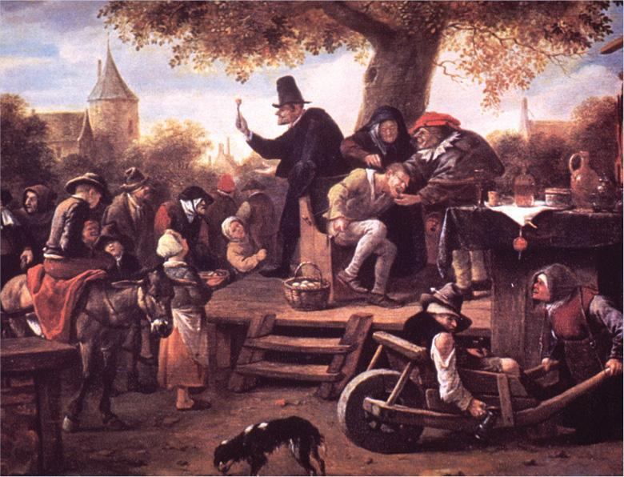
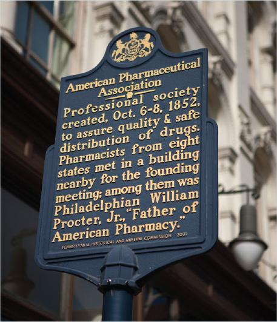
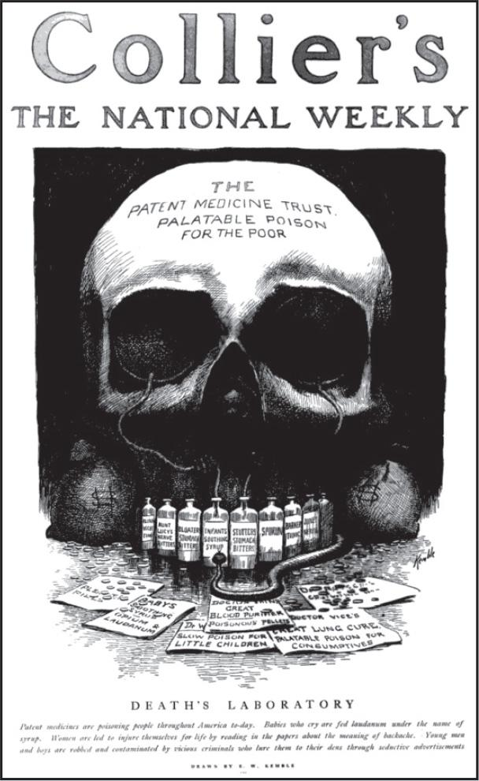
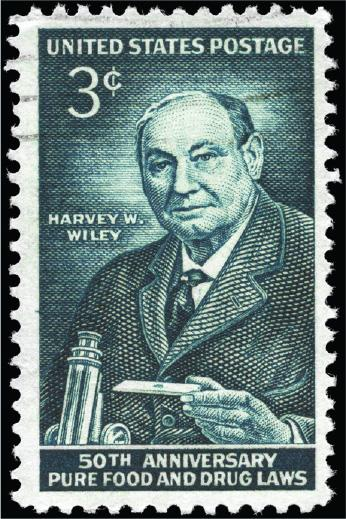
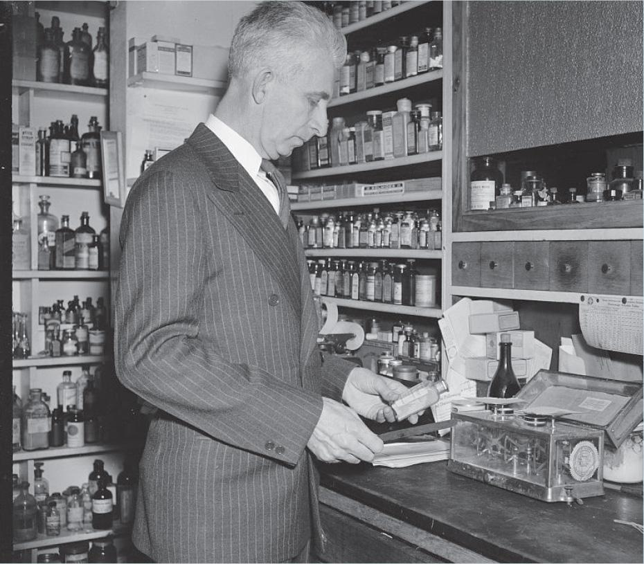
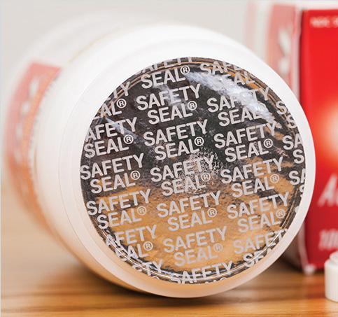
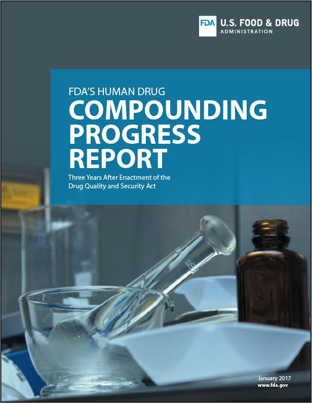
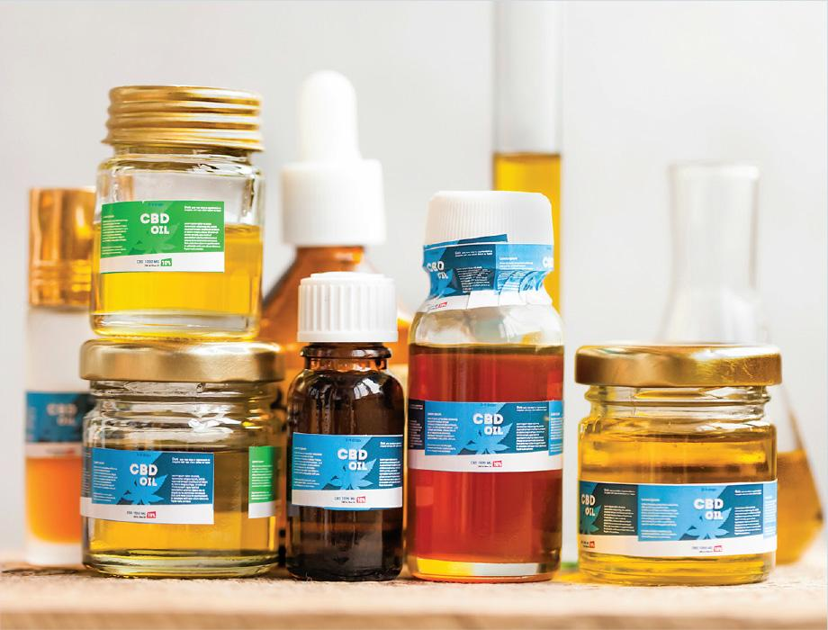

3.1 Historical Introduction
Prior to the 19th century, healthcare practices were guided by the knowledge and expertise of a variety of local individuals: shamans, healers, alchemists, herbalists, apothecaries, and—of course—physicians. Their treatments for illness and disease were confined to the rural neighborhoods and villages where they resided and were subsequently passed down among generations of families. As a result, most citizens relied on the opinions and skills of a small group of individuals, including some with questionable medical expertise and motives.

Rise of Adulterated Drugs in the United States
During the Industrial Revolution in the United States in the 19th century, population growth surged. US citizens relied mainly on imported, adulterated drugs from England, which were freely distributed due to an unstructured healthcare system and the absence of legislative controls. The Drug Importation Act, signed by President James Polk in 1848, restricted the importation of these adulterated drugs by hiring inspectors at ports of entry. However, this legislation could not stop the growing problem of domestic adulterated medicines.
Citizens in large cities and isolated rural communities became the victims of the unethical practices of small-time hucksters. These individuals crisscrossed the country promoting fabulous cure-alls, such as Dr. Bonker’s Celebrated Egyptian Oil (a liquid remedy for colic, cramps, and cholera) and Reanimating Solar Tincture (a liquid remedy to “restore life in the case of sudden death”).
Often, traveling salespeople would be accompanied by performers. These traveling medicine shows wowed audiences with circus-like entertainment, musicians, and celebrities while promoting particular drugs. These bogus medicines, known as patent medicines, were typically elixirs comprised of large amounts of alcohol or opium, often laced with random herbs or “secret ingredients.” Some of these hawked remedies possessed minor medicinal qualities, but most medicines were simple sedatives, ineffective antidotes, or poisonous substances.
Factories could produce and distribute medicines in huge quantities without quality control or inspections and claim medicinal properties based on faulty research or outright lies. For example, fraudulent versions of the smallpox vaccine were manufactured and distributed nationwide by multiple companies.
To curb this unethical behavior, US lawmakers passed the Vaccine Act of 1813, the first federal law addressing consumer protection and pharmaceutical production. The federal government assigned an agent to monitor and oversee the distribution of the genuine vaccine. Unfortunately, the Vaccine Act was limited in its language and scope and was repealed less than a decade later in response to a smallpox outbreak traced to ineffective vaccines. These vaccines were created by a pharmacist working under a government representative in North Carolina. As a result, states became the acting authority to regulate vaccines.
Need for Educated and Trained Physicians and Pharmacists
With more US citizens also came a greater need for access to a formal system of healthcare information and treatment. Medical schools began to sprout up around the country, developing their curricula based on an increasing wealth of information. These institutions, however, often competed with the traditional healing practices of established community leaders. In 1821, the Philadelphia College of Pharmacy was established by 68 druggists and apothecaries and became the first college of pharmacy in the United States. The founding of this college was a clear sign of the separation between medicine and pharmacy, thus paving the way for the movement toward evidence-based medicine and pharmacotherapy.
That separation of professions led to the establishment of the American Medical Association (AMA) in 1847. The AMA set standards for medical education and ethics, the advancement of scientific discovery, and the improvement of public health. The American Pharmaceutical Association—now called the American Pharmacists Association or APhA—was established in 1852 in Philadelphia and today is the largest association of pharmacists in the United States. The APhA leads the profession by providing timely access to relevant information, promoting discussion and consensus in the development of policies, and providing opportunities for professional development across the entire pharmacy profession.

Beginning in 1876, physicians in the United States were educated and trained to the standards set by the Association of American Medical Colleges. The establishment of high standards led to a steady rise in the number of skilled physicians. However, the vast majority of these physicians resided in the cities in which medical schools were located. Therefore, city dwellers and those who were affluent had the advantage of access to trained and educated physicians, treatment based on published medical research, and transportation to hospitals. Those individuals who resided in rural communities and those who lacked transportation or the financial means to access formal medical treatment were forced to go without medical care or seek treatment from local healers and traveling medicine shows.
Patient Safety as Impetus for Legislation
At the beginning of the 20th century, the AMA— supported by the APhA and leading academics, chemists, and medical and pharmaceutical researchers—called for drug development based on scientific evidence and animal and human trials. Concurrently, a more educated public, fueled by the investigative reports of civic-minded journalists known as muckrakers, demanded that the US government set sanitation and manufacturing standards for the food industry. One muckraker in particular, Upton Sinclair, exposed the corruption of the meat-packing industry and the appalling working and living conditions of America’s poor in his novel The Jungle.
Other muckrakers focused on the patent drug business and its advertisers. These patent drugs containing toxic ingredients such as arsenic, alcohol, and opiates were advertised to cure tuberculosis, syphilis, cancer, and other diseases.
One muckraker who attacked the patent drug industry was journalist Samuel Hopkins Adams. He wrote a scathing, 10-part series, titled “The Great American Fraud,” in Collier’s the National Weekly in 1905. This series addressed the evils of patent medicines and the gullibility of the US consumer:
Gullible America will spend this year some seventy-five millions [sic] of dollars in the purchase of patent medicines. In consideration of this sum it will swallow huge quantities of alcohol, an appalling amount of opiates and narcotics, a wide assortment of varied drugs ranging from powerful and dangerous heart depressants to insidious liver stimulants; and, far in excess of all other ingredients, undiluted fraud. For fraud, exploited by the skillfulest [sic] of advertising bunco men, is the basis of the trade.

As a result of this public outcry, lawmakers passed the Pure Food & Drugs Act in 1906, setting standards for both the food and drug industries. This act, the first in a series of consumer protection laws, established federal inspection of meat products and forbid the manufacture, sale, and transportation of adulterated food products and poisonous patent medicines. It also mandated accurate content and dosage labeling of certain drugs, including potentially dangerous ingredients such as alcohol, heroin, and cocaine. The Pure Food & Drugs Act also established, from previously existing organizations, the Bureau of Chemistry. This organization would later become the US Food and Drug Administration (FDA).

Although the intentions of the Pure Food & Drugs Act were laudable, the act only addressed the mislabeling of drug ingredients. It did not prohibit fraudulent therapeutic claims. For that reason, the US Congress enacted the Sherley Amendment in 1912, which prohibited “false and fraudulent” therapeutic claims on medicine labels.
Despite this stronger legislation, it would take the deaths of more than 100 individuals, mainly children, from the use of sulfanilamide diluted with diethylene glycol, a chemical related to antifreeze, to spur more comprehensive legislation. (For more information on the Elixir Sulfanilamide tragedy, see the historical introduction of Chapter 2.)
In response to the Elixir Sulfanilamide tragedy, the US Congress passed the Federal Food, Drug, and Cosmetic (FD&C) Act in 1938. This act required drug manufacturers to perform animal testing on all new drugs and dictated that pharmaceutical manufacturers file a New Drug Application (NDA) before FDA approval. However, this legislation only stipulated that drugs be safe for human consumption, not that medications needed to be effective. The FDA also identified more than 20 drugs that were not safe for human use unless they were sold via a physician’s or dentist’s prescription. These medications included sulfa drugs, barbiturates, thyroid drugs, and amphetamines. The FD&C Act recognized the United States Pharmacopeia–National Formulary (USP–NF) as the official compendium of drug standards. Still, it would take another human tragedy to drive additional oversight of pharmaceutical facilities.
In 1941, hundreds of patients were injured or killed from the ingestion of sulfathiazole tablets that were inadvertently contaminated with phenobarbital. These contaminated drugs were manufactured by the Winthrop Chemical Company. As a result of this tragedy, the FDA laid the foundation for production control standards by mandating that pharmaceutical products must be manufactured according to Current Good Manufacturing Practices (CGMPs) and quality assurance standards, minimizing the risk to consumers.
These quality assurance standards extended to insulin in 1941 and penicillin in 1945. The Insulin Amendment required that this medication must pass a batch certification of purity, strength, and quality. Prior to this amendment, insulin was extracted from agricultural animals with no assurance of consistent quality. The Penicillin Amendment required that all penicillin products must pass a quality assurance process. Later, this process was extended to all antibiotics.
In 1951, Congress passed the Durham-Humphrey Amendment, an amendment to the 1938 FD&C Act. This legislation was enacted by two senators in Congress who were pharmacists: Representative Carl Durham from North Carolina and Senator Hubert Humphrey from Minnesota (who would later become vice president of the United States). It categorized drugs into legend drugs (prescription drugs) and over-the-counter (OTC) drugs. Legend drugs were those medications that could be potentially harmful to patients unless they were used under the supervision of a licensed prescriber. For that reason, these prescription drugs were required to have the following container label: “Caution: Federal law prohibits dispensing without a prescription.” This act also contained information describing the adulteration and misbranding of drugs. An adulterated drug is a drug that has been mishandled or improperly packaged. A misbranded drug has false or misleading labeling.

Despite additional legislation to regulate various aspects of the pharmaceutical industry, another medication tragedy spurred progress toward safe drug therapy. In 1957, thalidomide, a German-manufactured medication touted as a treatment for a variety of ailments (most notably, to alleviate morning sickness associated with pregnancy and to treat insomnia), was widely marketed and adopted for use in the United States as the drug Kevadon. This drug was given to more than 1,000 US physicians for investigational use. More than 20,000 individuals were given thalidomide tablets, including 624 pregnant patients who gave birth to 17 babies who had deformities.
Over the next few years, women in 46 countries who had taken thalidomide gave birth to babies who had limb deformities as well as cardiac and kidney disorders. In 1962, Frances Oldham Kelsey, the new director of the FDA’s Office of Scientific Investigations, raised concerns about the lack of animal testing done on thalidomide. Despite tremendous pressure from the US manufacturer of Kevadon to approve this drug, Kelsey held firm and blocked approval of the drug. To honor her ethical responsibility and courage as a civil servant, Kelsey received the President’s Award for Distinguished Federal Civilian Service from President John F. Kennedy in 1962.
Due to extensive media coverage that shared photos of thalidomide victims with limb deformities, this tragedy was part of the impetus that resulted in the passing of the Kefauver-Harris Amendment in 1962. This legislation, signed by President John F. Kennedy, was an amendment to the FD&C Act and required that drugs undergo clinical trials to prove their safety and efficacy prior to marketing. Drug research involved the use of placebos in controlled trials.
As a byproduct of this legislation, a retrospective review of all approved drugs from 1938–1962 was undertaken by the FDA to determine the efficacy of these drugs. This review, known as the Drug Efficacy Study Implementation (DESI), evaluated more than 3,000 products and found that about one-third of these drugs were not effective based on their therapeutic claims. There are still a number of these drugs on the market that are not FDA approved.
In 1970, the US Congress passed the Controlled Substances Act (CSA) to combat and control drug abuse. This legislation stemmed from an increase in recreational drug use during the 1960s. The CSA classified drugs with potential for abuse as controlled substances, or drugs that have a risk for abuse and physical or psychological dependence. The controlled substances were then ranked into five categories, or schedules. Schedule I drugs are not commercially available or legally dispensed under federal law in the United States due to their high potential for abuse and addiction. Schedule II drugs are the most highly regulated drug category. These scheduled drugs have accepted medical use and must be written by a prescriber who has been licensed by the Drug Enforcement Administration (DEA). Schedule III–V drugs have accepted medical use and must be written by a prescriber licensed by the DEA. These scheduled drugs typically have limits on refills.
In addition to signing this legislation, President Richard M. Nixon created the DEA to enforce the laws regarding both legal and illegal addictive substances. The DEA directs most of its funds to the illegal trafficking of drugs. (For more information on controlled substances and the DEA, see Chapter 13.)
A product-tampering incident prompted the passage of the Tamper-Resistant Packaging Requirements in 1982. That year, seven individuals died after taking Extra-Strength Tylenol capsules laced with cyanide. Investigators and the FDA believed that the perpetrator opened the capsule containers, injected the cyanide into the red portions of the capsules, reassembled the capsules, closed the containers, and placed the tainted medication containers back on the stores’ shelves. One suspect, James William Lewis, was charged with extortion after sending a letter to Johnson & Johnson (the manufacturer of the medication), taking credit for the murders, and demanding $1 million from the company to stop the killings. However, Lewis has never been charged with the murders.

In response to these poisonings, Johnson & Johnson worked with the FDA to produce a tamper-proof medication container that used induction sealing to protect the contents. This type of sealing made tampering of the product evident to consumers. Johnson & Johnson also reformulated their capsules into caplets, a form that cannot be easily accessed for the placement of a poisonous substance. In addition to the FDA’s new tamper-resistant packaging regulations for drug manufacturers, the US Congress passed the Federal Anti-Tampering Act in 1983, making it a federal crime to tamper with packaged consumer products.
In 1996, the US Congress passed the Health Insurance Portability and Accountability Act (HIPAA). This legislation placed safeguards to protect patient confidentiality and used the term protected health information (PHI) to describe a patient’s private medical information. This law requires that every healthcare facility have a written policy on patient confidentiality that must be provided to patients as a handout. HIPAA also gave patients the right to access their own medical records, with some exceptions. In addition, HIPAA placed limits on how much of a patient’s PHI may be shared. Healthcare personnel are legally bound to disclose only the minimum amount of PHI required for the intended purpose.
The 9/11 terrorist attack on the United States in 2001 was the catalyst for the passage of the Public Health Security and Bioterrorism Preparedness and Response Act in 2002. This legislation was to bolster the ability of the United States to prevent, prepare for, and respond to acts of bioterrorism and other public health emergencies. These initiatives included public health surveillance and reporting systems; preparedness of laboratories; properly trained emergency response, public health, and medical personnel; preparedness of public health agencies; and management of communication networks to disseminate information to the public.
Another law that passed in 2002 was the Best Pharmaceuticals for Children Act. This legislation sought to improve the safety and efficacy of children’s medications by encouraging pediatric drug studies. It also supported clinical trials and research for off-patent drugs that needed additional research prior to use in the pediatric patient population. In addition, this legislation led to an increased number of medications that were specifically labeled for pediatric use.
Recent Legislation Specific to Sterile Compounding
The tragic deaths of 64 individuals who received tainted steroid injections prepared at the New England Compounding Center spurred the creation and passage of the 2013 Drug Quality and Security Act (DQSA). The DQSA stemmed from the Food and Drug Administration Modernization Act (FDAMA) of 1997, which first defined 503A pharmacies. This legislation, signed by President Barack Obama, was an amendment to the FD&C Act. It gives the FDA additional authority to regulate and monitor the preparation of compounded drugs in two specific areas: drug compounding and drug supply chain security. For drug compounding, the act defines outsourcing facilities and mandates that these facilities adhere to the regulations put forth by the DQSA. These regulations include the identification of any bulk substances used to prepare sterile and nonsterile final products. For drug supply chain security, the DQSA requires the development of a national track-and-trace electronic system for prescription medications.

Title I of the DQSA, the Compounding Quality Act, identifies Sections 503A and 503B of the amended FD&C Act and delineates the circumstances under which compounded medications can be prepared. Under Section 503A, a pharmacy, specialty pharmacy, hospital pharmacy, or similar facility may prepare compounded sterile preparations (CSPs) provided that the preparations are pursuant to patient-specific prescriptions. This type of compounding is generally overseen by each state board of pharmacy (BOP). Section 503B created a new category of FDA-regulated entity: human drug compounding outsourcing facilities. These outsourcing facilities prepare CSPs under the supervision of a licensed pharmacist and are subject to CGMPs. The facilities can be registered with the FDA and are under the guidance of the agency.
Title II of the DQSA established the Drug Supply Chain Security Act (DSCSA). This section, commonly referred to as track and trace, addressed requirements related to the tracking of prescription drug products throughout the supply chain. The track-and-trace electronic system requires manufacturers to apply unique product identifiers that would enhance the overall safety and security of the drug supply chain as well as the legitimacy of drugs. This system also improves drug recall processes.
Today, the practice of compounding is mostly regulated by state BOPs, but the FDA and other federal agencies also have regulatory authority over certain aspects. Community and hospital compounding pharmacies are allowed exemptions to the FD&C Act if they comply with the regulations outlined in Section 503A of the DQSA. Compliance with this section of the DQSA allows pharmacies, under the oversight of the state BOP, the authority to prepare CSPs through extemporaneous or anticipatory sterile compounding pursuant to a patient-specific prescription or medication order. Pharmacies or compounding facilities that perform compounding that exceeds the scope of what is allowed under Section 503A would be expected to follow CGMPs.
Most state BOPs establish laws, regulations, and rules that reflect and reinforce national practice standards and federal pharmacy laws such as the FD&C Act, DQSA, and the CSA. State BOP rules specify requirements for duties a pharmacist must perform including the pharmacist double-check for all new prescriptions and medication orders, as well as identifying additional requirements for in-process and release checks of the work of pharmacy technicians in the sterile compounding environment.
State Legalization of Marijuana
When state and federal laws differ, the most stringent law applies. Despite this supremacy clause, many states have approved cannabis (marijuana) or cannabis-derived products for medicinal or recreational use, even though marijuana is listed as a Schedule I controlled substance under the CSA. The classification of marijuana as a Schedule I controlled substance is based on its high potential for abuse, mostly due to the psychoactive effects of its active ingredient delta-9-tetrahydrocannabinol (THC). Cannabis contains more than 80 biologically active chemical compounds, with the most commonly known being THC and cannabidiol (CBD).

Although cannabis itself is not FDA-approved, there are one cannabis-derived and three cannabis-related approved drug products on the market that are only available with prescriptions. Epidiolex, which contains CBD, is approved for certain types of seizures. Marinol and Syndros contain dronabinol, a synthetic form of THC, and are approved for the treatment of anorexia associated with weight loss in patients with acquired immune deficiency syndrome (AIDS). Cesamet contains the active ingredient nabilone, which is another synthetic drug with a chemical structure similar to THC. Cesamet is indicated for nausea and vomiting caused by cancer chemotherapy when other medications have failed.
There has been growing interest in the use of CBD and other cannabis derivatives for a variety of indications other than those approved uses. For that reason, the Agriculture Improvement Act, more commonly known as the 2018 Farm Bill, was signed into law on Dec. 20, 2018. This law removed hemp, defined as the plant of cannabis sativa L. and any component derived from this plant, that has a THC concentration of no more than 0.3 percent on a dry weight basis as a controlled substance under the CSA.
Sterile compounding personnel must stay apprised of changes in federal and state laws and regulations, accreditation standards, and credentialing standards that affect pharmacy and sterile compounding practices. Because the sterile compounding field continues to evolve, personnel may find that keeping up-to-date on changes in this specialty area can be challenging. However, their adherence to legal requirements and practice standards is of utmost importance to ensure the health and safety of patients receiving CSPs.
In 2020, a public health emergency was declared in response to the growing COVID-19 outbreak. On March 10, 2020, former Health and Human Services Secretary Alex M. Azar issued a Declaration under the Public Readiness and Emergency Preparedness (PREP) Act, which was originally enacted in 2005. A PREP Act declaration is issued to provide immunity from liability to covered persons including certain entities and individuals in relation to countermeasures applied in combating the pandemic. Some of the most essential countermeasures applied in combating COVID-19 are Coronavirus testing, vaccinations, and treatment with certain antiviral medications. The PREP Act declaration in 2020 identified pharmacists, pharmacy interns, and pharmacy technicians as covered persons. This opened the door for an expansion to the scope of practice for pharmacists as they were granted authority to order and administer COVID-19 tests and certain treatments. For the first time, technician scope of practice was expanded to authorize them to prepare and administer COVID-19 vaccinations. This was later expanded to include influenza vaccinations for patients aged three and up. Many state boards of pharmacy amended their pharmacy acts or rules to authorize this change to the scope of practice for pharmacists and technicians at the state level.
A 2022 study published in MDPI, a publisher of open access, peer-reviewed scholarly journals, indicates that most pharmacists and pharmacy technicians who were surveyed related to pharmacy technicians’ participation as immunizers found that they favored the expansion of the pharmacy technician scope of practice to include more patient-care duties under the supervision of the pharmacist. The COVID-19 related PREP Act declaration has been amended eleven times since 2020, with the latest declaration extending through at least December 2024. While there is some uncertainty regarding the longevity of expanded scope of practice related to the PREP Act, there is little doubt that pharmacy technicians are being called upon to support pharmacists at a higher level, as both technicians and pharmacists encounter an ever-changing and expanding scope of practice.